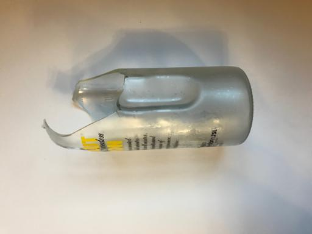
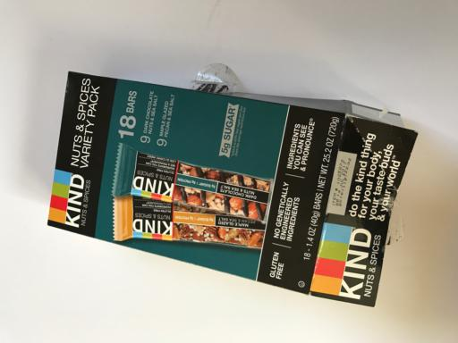
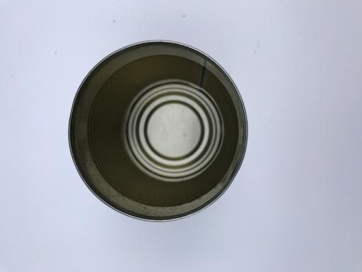
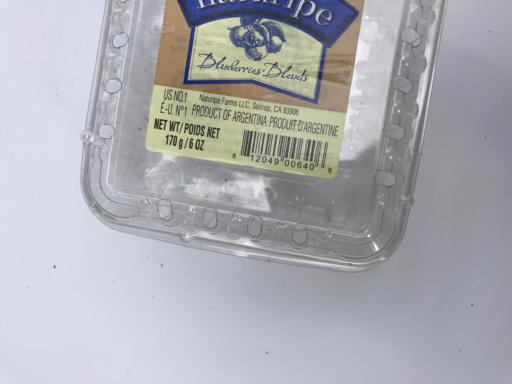
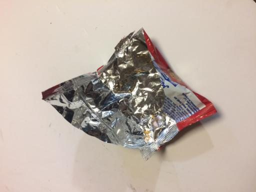
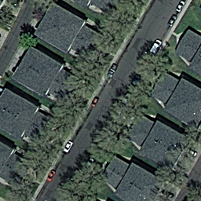
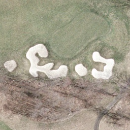
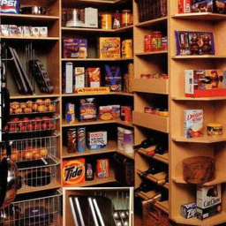

Case Studies
Below, you can see some case studies we have done for computer vision applications in various fields based on some publicly available datasets from Kaggle or recently published research papers.
You can install our Python package and run your own exmples in 5 min.
You can also use this IPython notebook to train and evaluate the results for any of the above exmples or with your own data.
Pneumonia
Dataset from Kaggle.
Best result achieved on Kaggle as reported here:
Accuracy: 82%
Number of samples used for training: 5,216
VEDX accuracy for different number of samples used for training:
| n_positives | n_negatives | Accuracy |
|---|---|---|
| 5 | 5 | 71% |
| 25 | 25 | 81% |
| 50 | 50 | 87% |
| 100 | 100 | 85% |
Summary:
Best accuracy achieved with much fewer samples, 50 samples vs. 5000.
Significantly higher accuracy achieved (85% vs. 82%) with 200 training samples.
Pneumonia
Normal
Bell Pepper Bacterial Disease
Dataset from Kaggle.
Best result achieved on Kaggle as reported here:
Accuracy: 96%
Number of samples used for training: 2,475
VEDX accuracy for different number of samples used for training:
| n_positives | n_negatives | Accuracy |
|---|---|---|
| 3 | 3 | 86% |
| 5 | 5 | 86% |
| 15 | 15 | 94% |
| 25 | 25 | 100% |
Summary:
Higher accuracy achieved (100% vs. 96%) with significantly lower number of training samples, 50 samples vs. ~2500 samples.
Bacterial Disease
Healthy
Malaria Infected Cells
Dataset from Kaggle.
Best result achieved on Kaggle as reported here:
Accuracy: 96%
Number of samples used for training: 22,049
VEDX accuracy for different number of samples used for training:
| n_positives | n_negatives | Accuracy |
|---|---|---|
| 3 | 3 | 88% |
| 5 | 5 | 86% |
| 15 | 15 | 88% |
| 25 | 25 | 96% |
| 50 | 50 | 96% |
Summary:
Same accuracy achieved with significantly lower number of training samples, 50 samples vs. ~22,000 samples!
Parasitized
Uninfected
Altered Fingerprints
Dataset from Kaggle.
VEDX accuracy for different number of samples used for training:
| n_positives | n_negatives | Accuracy |
|---|---|---|
| 3 | 3 | 86% |
| 5 | 5 | 88% |
| 15 | 15 | 94% |
| 25 | 25 | 92% |
| 50 | 50 | 96% |
Altered
Real
Fruits
Dataset from Kaggle.
Best result achieved on Kaggle as reported here:
Accuracy: 98%
Number of samples used for training: 10,900
VEDX accuracy for different number of samples used for training:
| n_positives | n_negatives | Accuracy |
|---|---|---|
| 3 | 3 | 81% |
| 5 | 5 | 85% |
| 15 | 15 | 98% |
| 25 | 25 | 98% |
| 50 | 50 | 99% |
Summary:
Same accuracy achieved using much fewer number of samples (30 vs 10,900.)
Good accuracy achieved using only 10 samples.
Rotten
Fresh
COVID Detection From CT Scan
You can download the dataset from here.
The best result achieved by UC-Berkeley researchers publishe here:
Accuracy: 89%
Number of samples used for training: 700
VEDX accuracy for different number of samples used for training:
| n_positives | n_negatives | Accuracy |
|---|---|---|
| 10 | 10 | 65% |
| 50 | 50 | 76% |
| 100 | 100 | 83% |
| 350 | 350 | 90% |
Summary:
Slightly better accuracy achieved using same number of samples.
Good accuracy achieved using 200 samples.
COVID
No COVID
Brain Tumor
Dataset from Kaggle.
Best result achieved on Kaggle as reported here:
Accuracy: 88%
Number of samples used for training: 193
VEDX accuracy for different number of samples used for training:
| n_positives | n_negatives | Accuracy |
|---|---|---|
| 5 | 5 | 76% |
| 15 | 15 | 86% |
| 25 | 25 | 87% |
| 50 | 50 | 90% |
Summary:
Best accuracy achieved with fewer samples, ~50 samples vs. 193.
Higher accuracy achieved (90% vs. 88%) with 100 training samples.
Tumor
Normal
Concrete Crack
You can download the dataset from here.
The best result achieved by theresearchers publishe here:
F1 Score: 90%
Number of samples used for training: 400
VEDX accuracy for different number of samples used for training:
| n_positives | n_negatives | Accuracy |
|---|---|---|
| 3 | 3 | 99% |
| 5 | 5 | 99% |
| 15 | 15 | 100% |
| 25 | 25 | 100% |
Summary:
99% accuracy achieved using only 6 samples. 100% accuracy achieved using only 30 samples.
Cracked
Not Cracked
Garbage
Dataset from Kaggle.
Best result achieved on Kaggle as reported here:
Number of classes: 6
Accuracy: 95%
Number of samples used for training: 400/class
VEDX accuracy for different number of samples used for training:
| n_samples | Accuracy |
|---|---|
| 10/class | 80% |
| 25/class | 87% |
| 50/class | 89% |
| 100/class | 90% |
| 400/class | 96% |
Summary:
Slightly better accuracy achieved using same number of samples.
Good accuracy achieved using only 10/class samples.
Cardboard
Glass
Paper
Metal
Plastic
Trash
Land Scenes
Dataset from Kaggle.
Best result achieved on Kaggle as reported here:
Number of classes: 21
Accuracy: 97%
Number of samples used for training: 500/class
VEDX accuracy for different number of samples used for training:
| n_samples | Accuracy |
|---|---|
| 10/class | 84% |
| 25/class | 90% |
| 50/class | 93% |
| 100/class | 95% |
| 500/class | 97% |
Summary:
Best accuracy achieved using the same number of samples. Good accuracy achieved with only 10/class samples.
Agricultural Land
Freeway
Beach
Dense Residential
River
Golf Course
Medium Residential
Airport
Harbor
Indoor Scene Recognition
Dataset from MIT.
Best result they achieved as reported in their paper.:
Number of classes: 67
Accuracy: 73%
Number of samples used for training: 400/class
* Note that the paper was published before the rise of Deep Learning.
VEDX accuracy for different number of samples used for training:
| n_samples | Accuracy |
|---|---|
| 10/class | 85% |
| 25/class | 90% |
| 50/class | 91% |
| 100/class | 92% |
| 400/class | 94% |
Summary:
Significantly higher accuracy achieved (85% vs 73%) with much fewer samples, 10/class vs. 400/class.
Subway
Bus

Shoe Store
Auditorium
Theater
Library
Lobby

Corridor
Pantry
